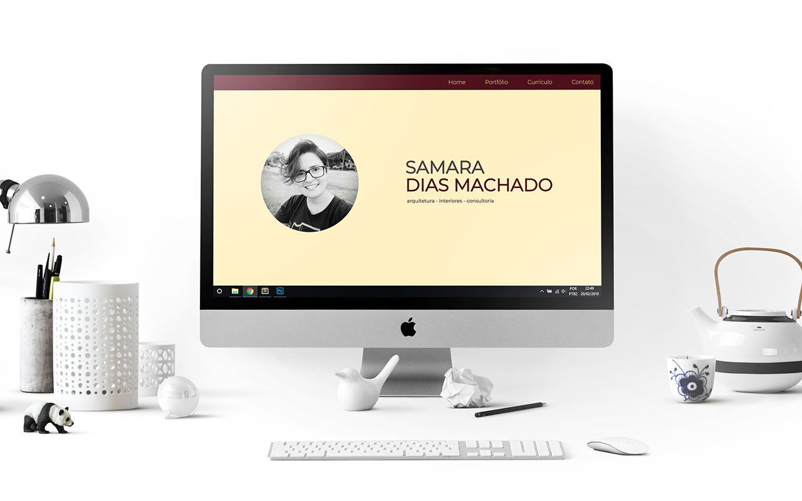
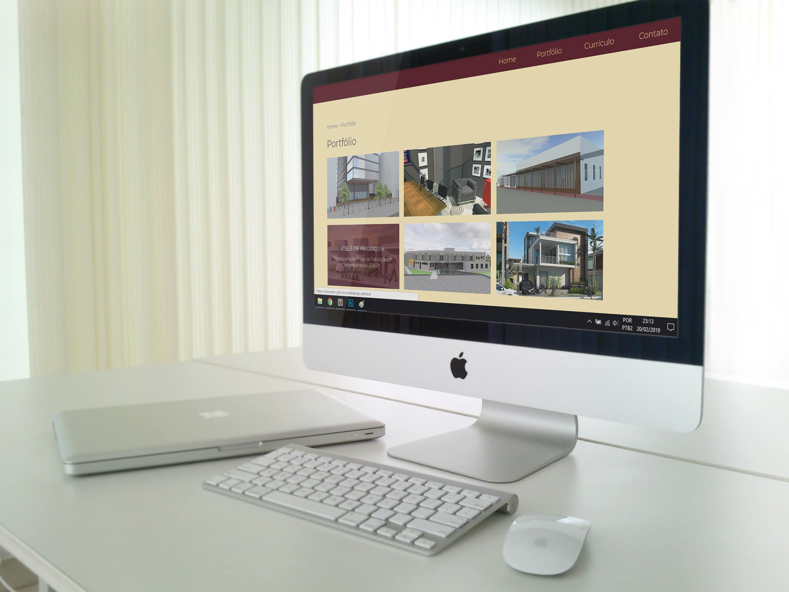
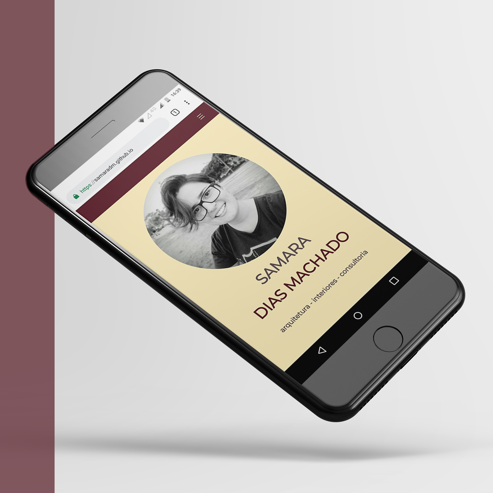

Web design Portfolio Online
Descrição do Projeto
No início de 2019 concluí o curso online de Web design completo em HTML e CSS, utilizando os conhecimentos adquiridos nessa linguagem de programação para fazer um website de apresentação do meu portfolio online de trabalhos, suas respectivas descrições e as demais informações, como currículo e contato.
Este site foi desenvolvido em HTML, CSS e com alguns conhecimentos básicos de JavaScript. Possui versões desktop e mobile, totalmente responsivas.
  Voltar ao portfólio